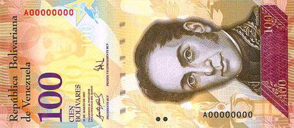

____
Валюта
Валюта в Венесуэле - Венесуэльский боливар.
Курс: 1 венесуэльский боливар - 0,000041 рублей (7 февраля 2021).
Появился венесуэльский боливар в 1875 году. Монеты 1, 5, 10, 12½, 25 и 50 сентимо 1, 10, 50 и 100 боливаров. Банкноты 2, 5, 10, 20, 50, 100, 500, 1000, 2000, 5000, 10 000, 20 000 и 100 000 боливаров

История
Боливар
Боливар был введён в 1879 году, заменив недолго существовавший венесолано в соотношении 5 боливаров = 1 венесолано. Первоначально боливар был основан на серебряном стандарте Латинского валютного союза (1 боливар = 4,5 г чистого серебра). Решение правительства в 1887 году сделало золотой боливар неограниченным законным платёжным средством, и золотой стандарт вступил в полную эксплуатацию в 1910 году. Венесуэла заменила золото на серебро в 1930 году, и в 1934 году боливар обменный курс был зафиксирован в размере 3,914 боливаров = 1 доллар США, переоценивался до 3,18 боливаров = 1 доллар США в 1937 году, курс, продолжался до 1941 года. До 18 февраля 1983 года (этот день получил название «Чёрная пятница»), боливар был наиболее стабильной валютой региона. С тех пор, однако, он стал жертвой высокой девальвации.
В денежном обращении до 1 января 2008 года находились:
банкноты номиналом в 50 000, 20 000, 10 000, 5000, 2000, 1000, 500, 100, 50, 20, 10 и 5 боливаров;
металлические монеты достоинством 500, 100, 50, 25, 5, 2 и 1 боливар, а также 50, 25, 10 и 5 сентимо.
Боливар фуэрте
7 марта 2007 года правительство Венесуэлы объявило о том, что с 1 января 2008 года в стране будет проведена деноминация в соотношении 1000 к 1. Новое официальное название валюты — боливар фуэрте, сильный боливар. При этом было отмечено, что название «сильный боливар» будет использоваться только временно, в течение периода обмена.
Центральный банк Венесуэлы продвигал новую валюту под лозунгом: Una economía fuerte, un bolívar fuerte, un país fuerte (букв. «Сильная экономика, сильный боливар, сильная страна»). По некоторым оценкам, на введение новой валюты правительство потратило более 320 млн долларов.
С 8 января 2010 года фиксированный курс был понижен с 2,15 до 2,6 боливаров за доллар по операциям, связанными с импортом продуктов питания и товаров здравоохранения, и до 4,3 боливаров за доллар для «ненужного» импорта (автомобили, нефтехимическая продукция и электроника). С 4 января 2011 года курс был зафиксирован на уровне 4,3 боливаров за доллар для обоих случаев. Однако рыночная стоимость боливара была значительно ниже установленного фиксированного курса; уже в феврале 2008 года она составляла 7 боливаров за доллар. В ноябре 2013 года на «чёрном рынке» давали уже 10 боливаров, а в марте 2014 года 50-52 боливара за доллар.
На начало февраля 2015 года официальный курс боливара составлял 6,35 за американский доллар и 7,20 за евро. Неофициальный обменный курс на начало 2015 года составлял уже около 150 боливаров за доллар.
В обращение были введены банкноты достоинством 2, 5, 10, 20, 50 и 100 боливаров, а также монеты номиналом 1, 5, 10, 12½, 25, 50 сентимо и 1 боливар.
Суверенный боливар
Основная статья: Суверенный боливар
Сложная экономическая ситуация привела к высочайшей инфляции в Венесуэле. Президент Николас Мадуро объявил о предстоящей с 4 июня 2018 года деноминации боливара (1000:1), новая валюта получила название Bolívar soberano, обозначение валюты — Bs. S. Были представлены новые монеты достоинством 50 сентимо и 1 боливар и банкноты в 2, 5, 10, 20, 50, 100, 200 и 500 боливаров.
Однако затем было объявлено о переносе срока деноминации на 60 дней с возможным последующим продлением срока ещё на 30 дней. В качестве причины изменения срока было названо обращение руководителей банков, которым понадобилось дополнительное время для перенастройки платёжных систем и устройств для выдачи и приёма банкнот.
25 июля 2018 года Николас Мадуро объявил об окончательных сроках (20 августа) и курсу обмена (100 000:1) новых банкнот на старые. Кроме того, было заявлено, что курс новой национальной валюты будет привязан к криптовалюте Petro, также регулируемой венесуэльским правительством.
____